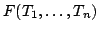
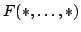

Usage
name T
shortName T
Signature
name,shortName: Type String
| Parameter | Type | Description |
|---|---|---|
| T | Type | A type |
Returns
Returns the name of the type T. In case T is the result of a function call , then name(T) returns the full expanded name of the type, while shortName(T) returns .